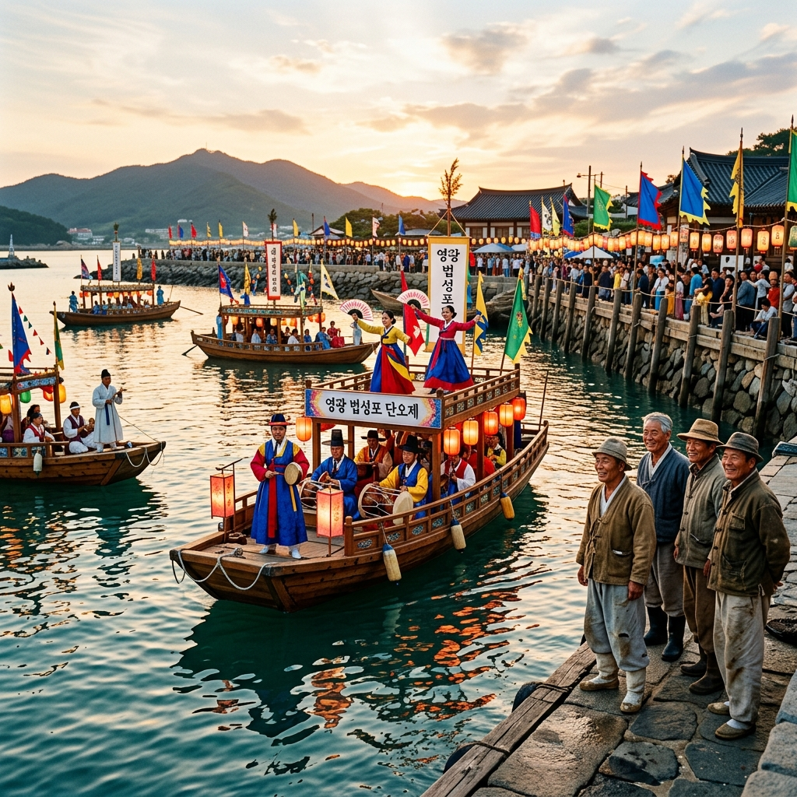
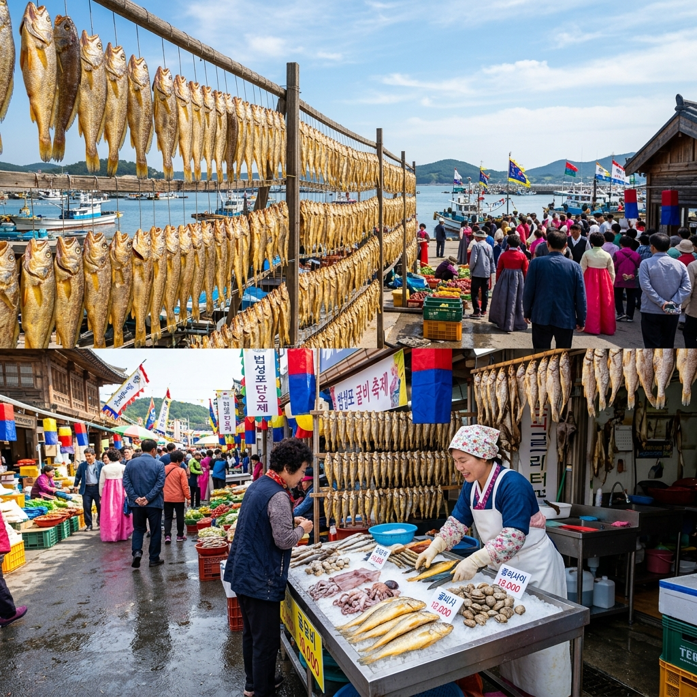
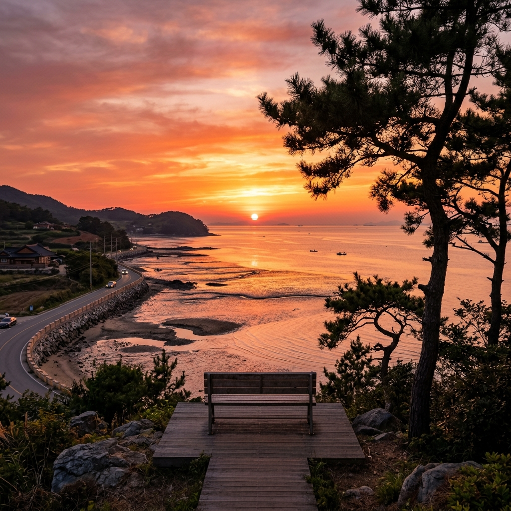

영광 법성포 단오제 — 서해 수상 선유놀이와 굴비 난장 즐기기
전남 영광군 법성포구에서 매년 단오(음력 5월 5일)를 맞아 열리는 법성포단오제는 1600년 넘는 역사를 자랑하는 국내 대표 수상 전통 축제입니다.
서해 칠산 앞바다와 법성포 포구가 어우러진 풍경 속에서 선유놀이·씻김굿·고싸움·굴비 난장 등 다채로운 행사가 펼쳐집니다. 2026년 단오는 양력 6월 19일(금)이며, 축제는 단오 전후 수일간 개최됩니다. 굴비의 고장에서만 맛볼 수 있는 싱싱한 제철 해산물과 전통 문화가 한데 어우러지는 특별한 여름 축제를 미리 알아보시기 바랍니다.
01. 법성포단오제란 — 1600년을 이어온 서해 수상 축제
법성포단오제는 전라남도 영광군 법성면 일원에서 열리는 전통 민속 축제로, 국가 무형문화재로 등재된 역사 깊은 행사입니다.
법성포는 삼국시대부터 중국·일본과 교류하던 국제 무역항으로, 단오제는 이 포구에서 고기잡이를 나가는 어부들의 풍어와 무사 귀환을 기원하던 해신제(海神祭)에서 유래하였습니다. 수백 년간 법성포 주민들이 힘을 합쳐 지켜온 이 축제는 현재도 씻김굿·선유놀이·난장 등 전통 방식 그대로 재현됩니다.
특히 포구 위에서 펼쳐지는 선유놀이(船遊戲)는 화려하게 꾸민 여러 척의 배 위에서 전통 음악과 무용이 어우러지는 장면으로, 전국 어디에서도 볼 수 없는 법성포만의 독창적인 볼거리입니다. 굴비 생산지의 특성상 축제장 곳곳에 참조기·굴비 관련 먹거리와 판매 부스가 가득 차 미식 여행으로서의 매력도 상당합니다.

법성포 포구 위 선유놀이 재현 / AI 제작 이미지
02. 2026년 단오 시즌 일정 — 미리 챙겨야 할 것들
2026년 음력 5월 5일 단오는 양력으로 6월 19일(금)에 해당합니다. 법성포단오제는 전통적으로 단오를 전후한 수일간 개최되며, 정확한 2026년 행사 일정은 법성포단오제보존회 공식 홈페이지(bspdanoje.or.kr) 또는 영광군 문화관광과를 통해 최종 확인하시기 바랍니다.
축제는 보통 개막식·제례·선유놀이·난장이 순서에 따라 진행됩니다. 평일인 목~토요일에 방문하면 비교적 혼잡이 덜하며, 선유놀이 공연은 보통 오후 늦게 절정에 달하므로 오후 2시 이후 도착해 저녁 무렵까지 머무르는 일정이 효과적입니다.
축제 기간 중에는 법성포 읍내 임시 주차장이 운영되며, 포구 인근 도로는 행사 시간대 교통 통제가 이뤄지기도 합니다. 대중교통 이용 시 영광공용버스터미널에서 법성면 방면 군내버스를 이용하면 됩니다.
03. 선유놀이 — 포구 위에 펼쳐지는 수상 공연의 압권
법성포단오제의 하이라이트는 단연 선유놀이입니다. 화려하게 치장한 여러 척의 나무 배가 포구를 가득 채우고, 그 위에서 판소리·민요·고수의 장단이 울려 퍼지는 광경은 마치 조선 시대의 한 장면을 그대로 옮겨놓은 듯한 감동을 줍니다.
배 위에는 한복을 곱게 차려입은 무희들이 탈춤과 강강술래 변형 동작을 선보이며, 배들이 포구 안을 빙빙 돌면서 구경꾼들과 호흡하는 방식으로 진행됩니다. 특히 석양이 지는 저녁 무렵에는 포구에 황금빛 노을이 깔리면서 배와 한복의 색채가 극적으로 빛나, 사진 촬영의 절호의 타이밍이 됩니다.
선유놀이는 무료로 관람할 수 있으며, 포구 제방 위와 인근 언덕이 주요 관람 명당입니다. 공연 30분 전부터 자리를 잡아두는 것이 좋고, 카메라나 스마트폰 삼각대를 준비하면 흔들림 없는 야경 사진을 담을 수 있습니다.
04. 굴비 난장 — 법성포 수산시장 먹거리와 쇼핑
영광 법성포는 국내 굴비의 본고장으로, 단오제 기간에는 포구 일대가 거대한 굴비·수산물 난장으로 변모합니다. 영광 법성포 굴비는 칠산 앞바다에서 잡아 올린 참조기를 특유의 천일염 해풍 건조 방식으로 만든 것으로, 살이 단단하고 감칠맛이 풍부한 것이 특징입니다.
난장에는 굴비 외에도 병어·민어·낙지·바지락 등 서해 제철 해산물 가게들이 즐비하게 늘어섭니다. 현장에서 바로 구워 먹거나 포장해 가져갈 수 있으며, 소금구이·회·매운탕 등 다양한 방식으로 즐길 수 있습니다. 먹거리 가격은 종류와 크기에 따라 다양하니, 여러 가게를 둘러보며 시세를 파악하고 구매하는 것이 현명합니다.
굴비를 선물용으로 구매할 계획이라면 법성포 공인 굴비 직판장을 이용하거나, 영광군에서 인증한 상인에게 구매하면 품질을 보다 신뢰할 수 있습니다. 진공 포장 및 아이스박스 서비스를 제공하는 곳도 많으니 장거리 이동 시에도 신선도 걱정은 덜 수 있습니다.

법성포 굴비 난장 풍경 / AI 제작 이미지
05. 씻김굿과 민속 체험 — 전통 의례의 현장 속으로
법성포단오제의 또 다른 핵심 프로그램은 씻김굿입니다. 씻김굿은 전남 지역 특유의 무속 의례로, 망자의 한을 풀어 저승으로 보내는 굿이지만, 단오제에서는 마을 공동체의 평안과 바다의 풍어를 기원하는 형태로 재연됩니다. 전통 음악의 장단과 무당의 화려한 의상, 긴 흰 천을 이용한 퍼포먼스가 인상적입니다.
고싸움놀이도 법성포단오제의 명물 중 하나입니다. 두 패로 나뉜 주민들이 거대한 볏짚 고(鼓)를 앞세우고 서로 밀어붙이며 겨루는 놀이로, 국가 무형문화재로 지정된 남도의 대표 민속놀이입니다. 장정 수십 명이 한 덩어리가 되어 부딪히는 장면은 박진감이 넘칩니다.
체험 부스에서는 단오 부채 만들기·창포 머리감기·그네뛰기·씨름 등 전통 단오 행사를 직접 체험할 수 있습니다. 아이와 함께 방문하는 가족에게 특히 좋은 교육적 경험이 될 것입니다.
06. 법성포 읍내 핵심 관광 코스
법성포에는 단오제 외에도 연중 둘러볼 만한 역사 명소들이 있습니다. 법성포구 자체가 조선 시대 해상 교역의 중심지였으며, 포구 주변의 돌담길과 오래된 창고 건물들이 옛 항구의 정취를 그대로 간직하고 있습니다.
읍내에서 10분 거리의 영광 원불교 성지는 원불교의 창시자 소태산 박중빈 대종사가 태어난 곳으로, 조용한 성지 순례 코스로도 인기입니다. 넓고 잘 정비된 경내는 산책하기에도 쾌적합니다.
법성포에서 차로 15분이면 영광 백수해안도로에 닿을 수 있습니다. 16.8km에 달하는 이 해안 드라이브 코스는 서해 낙조 명소로 손꼽히며, 특히 해질녘 붉게 물드는 서해 바다 풍경은 영광에서만 누릴 수 있는 절경입니다.
07. 불갑사·칠산어장 연계 코스
영광 방문 시 법성포와 함께 꼭 들르길 추천하는 곳이 불갑사입니다. 불갑사는 백제 시대에 창건된 천년 고찰로, 매년 9~10월에는 꽃무릇(석산) 군락이 장관을 이루는 가을 명소이지만, 6월에는 울창한 신록 속에서 한적한 사찰 분위기를 즐길 수 있습니다. 경내 보물인 대웅전과 석불좌상도 놓치지 마세요.
법성포 바로 앞 칠산 앞바다는 국내 최고급 굴비 원산지로 유명한 해역입니다. 날씨가 좋은 날에는 포구에서 소형 어선을 빌려 칠산 어장 일대를 둘러보는 바다낚시 체험도 가능합니다. 서해 특유의 완만한 갯벌과 드넓은 수평선이 어우러진 풍경은 내륙 여행자들에게 색다른 감동을 줍니다.
영광읍에는 굴비정식으로 유명한 향토 음식점들이 즐비합니다. 10가지 이상의 반찬과 함께 제공되는 굴비 밥상 한 상은 영광 여행의 빠질 수 없는 미식 경험이 될 것입니다.

영광 백수해안도로 서해 낙조 풍경 / AI 제작 이미지
08. 교통 및 주차 안내
법성포는 서울에서 승용차로 약 3시간~3시간 30분 거리입니다. 서해안고속도로 영광 IC에서 법성포 방향으로 약 15분이면 도착할 수 있습니다. 축제 기간에는 법성포 읍내 도로가 혼잡해지므로, 영광군에서 운영하는 임시 외곽 주차장을 이용하고 셔틀버스나 도보로 이동하는 것이 좋습니다.
대중교통으로는 영광공용버스터미널에서 법성면행 군내버스를 이용합니다. 영광터미널은 광주, 목포, 서울 방면 버스가 자주 다니는 편입니다. 기차를 이용한다면 KTX 정읍역 또는 광주송정역에서 영광행 버스로 환승하는 방법이 있습니다.
축제 기간 중에는 영광군청 공식 홈페이지와 축제 공식 SNS 채널을 통해 셔틀버스 노선과 임시 주차장 위치를 사전에 확인하시기 바랍니다. 당일 현장 안내 요원의 지시에 따라 질서 있게 이동하면 훨씬 편리하게 축제를 즐길 수 있습니다.
09. 숙박 — 영광 시내 숙소 선택 팁
법성포 인근에는 소규모 모텔과 게스트하우스가 있으나, 축제 기간에는 조기 마감될 수 있습니다. 보다 다양한 숙박 옵션을 원한다면 영광읍 시내 숙소를 미리 예약하는 것이 안전합니다.
영광읍에는 비즈니스호텔급 숙소가 몇 곳 있으며, 깔끔한 모텔들도 많아 당일치기보다는 1박 2일 일정으로 방문하면 법성포단오제와 백수해안도로, 불갑사까지 여유롭게 둘러볼 수 있습니다.
펜션을 선호하는 분들은 영광군 홍농읍 핵발전소 인근 해안가 펜션 단지나 백수해안도로 주변 펜션을 이용할 수 있습니다. 바다 전망 객실은 특히 인기가 많으니 축제 시즌 전에 미리 예약하세요.
10. 방문 전 꼭 체크할 사항
법성포단오제는 서해 포구에서 열리는 야외 축제인 만큼 날씨와 풍속의 영향을 많이 받습니다. 6월은 기온이 높고 습한 날이 이어질 수 있으니 통풍이 잘 되는 옷차림과 선크림·양산 등 자외선 차단 준비를 철저히 하세요.
축제 현장에서는 현금 결제가 원활한 편이므로 소액 현금을 넉넉히 준비하는 것이 좋습니다. 굴비 선물 세트 구매 시에는 카드도 대부분 사용 가능하지만, 난장 노점은 현금만 받는 경우가 많습니다.
포구 제방이나 갯벌 근처를 걸을 때는 미끄러짐 사고에 주의하세요. 샌들보다는 가볍고 걷기 편한 운동화를 신는 것을 권장합니다. 아이 동반 시에는 물가 안전에 각별히 유의하고, 구명조끼 착용 안내가 있을 경우 반드시 따르시기 바랍니다.
#법성포단오제
#영광단오제
#선유놀이
#영광굴비
#법성포
#6월축제
#단오여행
#전남여행
#영광여행
#국내여행